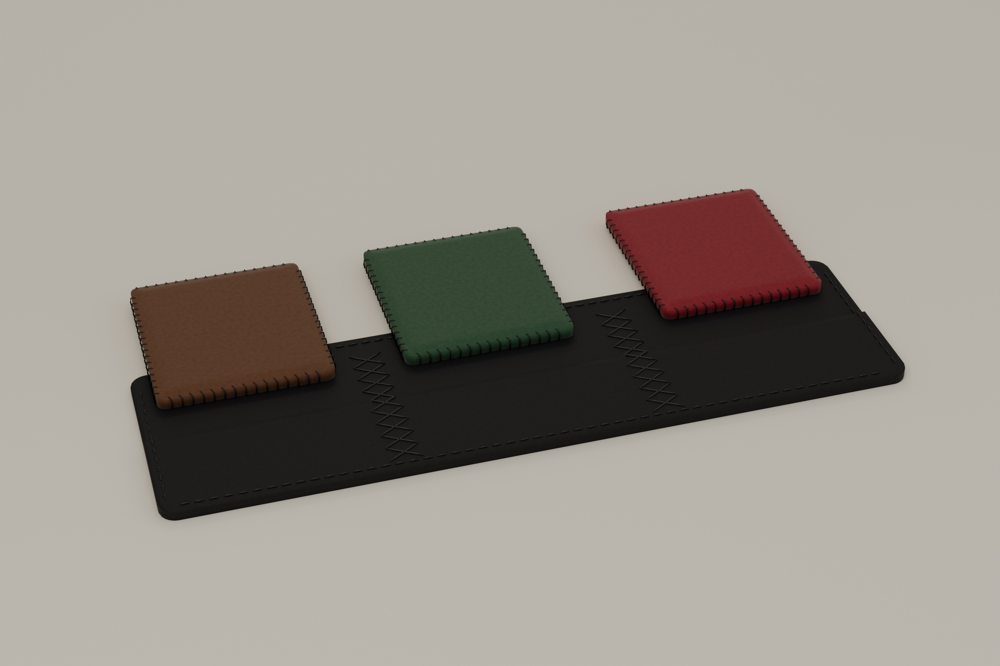
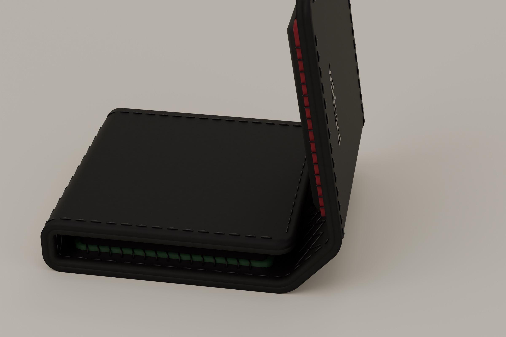
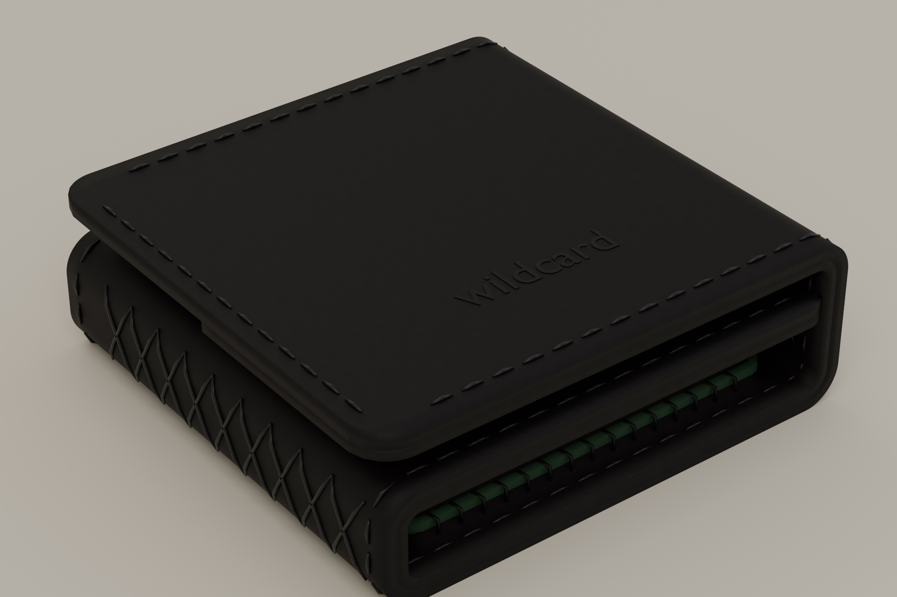
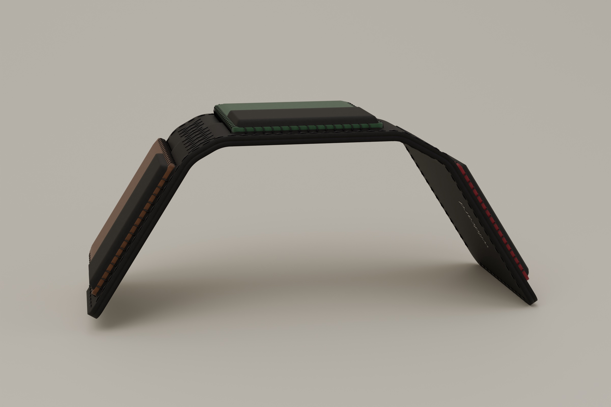
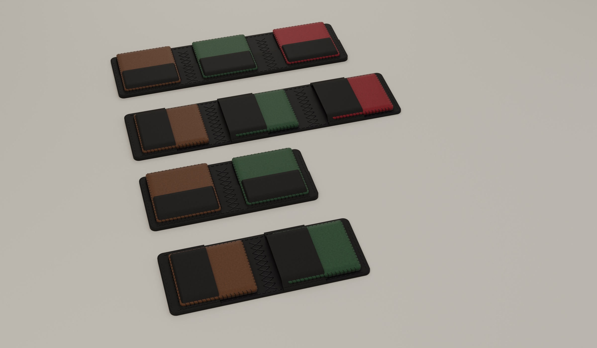
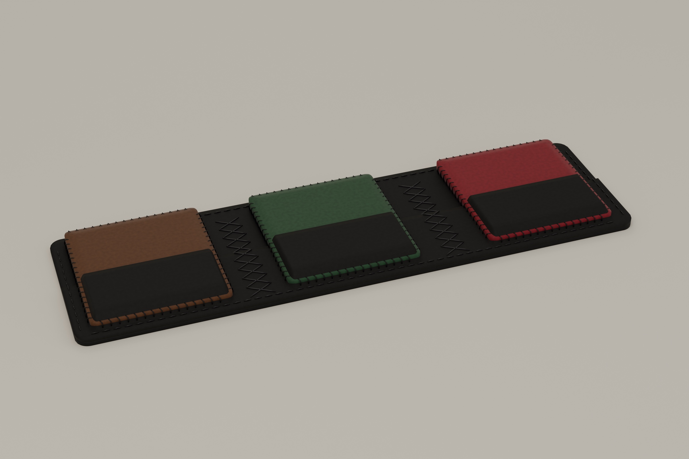
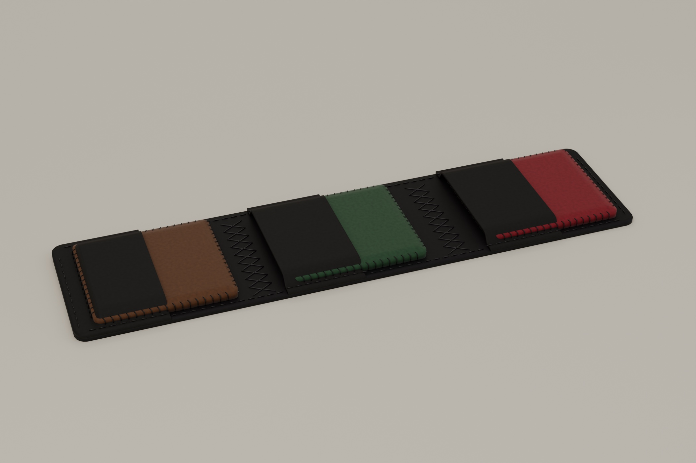
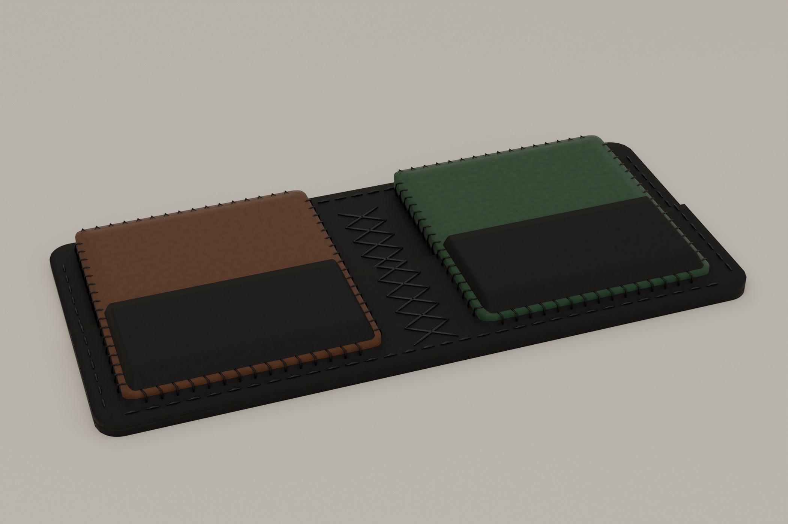
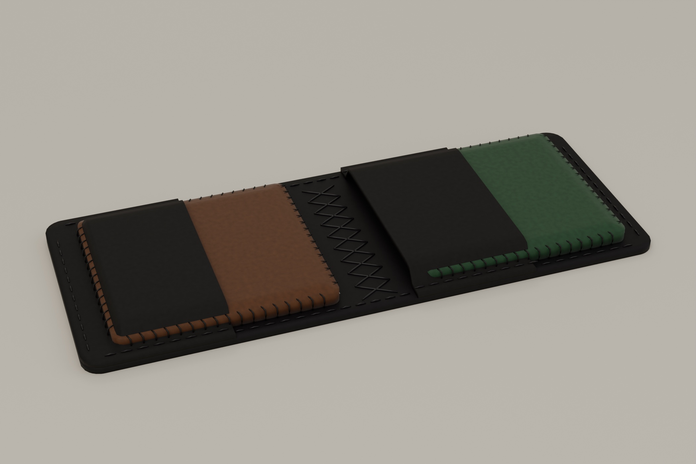
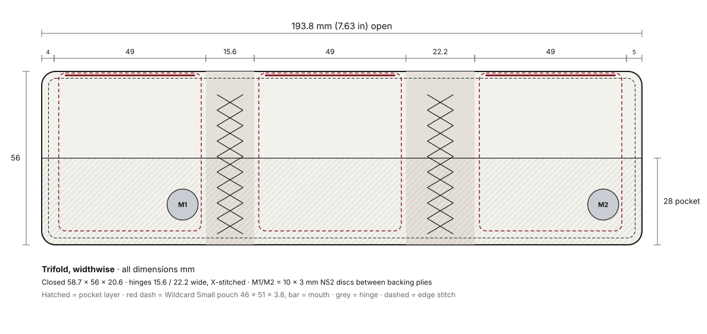

A wallet for three pouches
A strip of black cactus leather with three card-style slots sized to the Wildcard Small. Slide a pouch into each slot, fold it like a trifold wallet, and two hidden neodymium magnets hold it shut. Unfolded, it flexes at the stitched hinges and lies flat in a pocket.
How it works

Each pouch drops mouth-up into a pocket that covers its lower half, like a card in a wallet. The mouth and the top half stay exposed, so you can open a pouch without taking it out.

The left panel folds onto the centre, pouches face to face. The right panel wraps over the stack. The two hinges are different widths (15.6 and 22.2 mm) because the outer one has to wrap three pouches, not two.

Two 10 × 3 mm N52 discs sit between the backing plies, low on the panel and away from the pouch-mouth magnets. When the wallet folds, they meet through one pouch layer and hold it closed.

Unfolded, the strip is 7.6 × 2.2 in and about 6 mm thick. The pouches keep the three panels stiff, so it bends at the two hinges, not along its whole length. It reads as a gentle arch rather than a smooth curve. Lying flat, it's thinner than a folded card wallet and fits a front or back pocket.
Four versions
"Widthwise" puts the pouches side by side with their mouths up (the 46 mm side runs along the strip). "Lengthwise" puts them end to end with their mouths sideways (the 51 mm side runs along the strip). Widthwise turns out to be the shorter one. Most of the length comes from the hinges, so dropping to a bifold saves far more than changing orientation.

| Version | Pouches | Open (L × H) | Closed (W × H × T) | Hinges | Magnet pull through |
|---|---|---|---|---|---|
| Trifold, widthwise | 3 | 193.8 × 56 mm 7.63 × 2.20 in | 58.7 × 56 × 20.6 mm 2.31 × 2.20 × 0.81 in | 15.6 + 22.2 mm | 1 pouch (≈5 mm) |
| Trifold, lengthwise | 3 | 213.3 × 54 mm 8.40 × 2.13 in | 65.2 × 54 × 20.6 mm 2.57 × 2.13 × 0.81 in | 15.6 + 22.2 mm | 1 pouch (≈5 mm) |
| Bifold, widthwise | 2 | 122.6 × 56 mm 4.83 × 2.20 in | 58.7 × 56 × 14.0 mm 2.31 × 2.20 × 0.55 in | 15.6 mm | 2 pouches (≈10 mm) |
| Bifold, lengthwise | 2 | 135.6 × 54 mm 5.34 × 2.13 in | 65.2 × 54 × 14.0 mm 2.57 × 2.13 × 0.55 in | 15.6 mm | 2 pouches (≈10 mm) |

Shortest trifold. Mouths face up, so every pouch opens in place. Closes to a 2.3 in square.

Pockets cover the back half of each pouch and mouths face sideways. It's narrower, but longer open and wider closed.

Two pouches. 4.8 in open and 0.55 in closed. It only bends at one hinge, so it flexes into an L, not an arch.

The bifold with sideways mouths. 5.3 in open.
Spec sheets

Build
| Part | Spec | Qty |
|---|---|---|
| Backing, outer ply | Black cactus leather, ~1.0 mm, cut to the full strip with 4.5 mm corner radius | 1 |
| Backing, liner ply | Black cactus leather or thin liner, ~0.6 mm, bonded to the outer ply. Holds the magnets. | 1 |
| Pocket layer | Black cactus leather, ~1.2 mm. Widthwise: one strip, full length × 28 mm. Lengthwise: one piece per panel, 29 mm wide (the outermost piece runs to the strip's end). | 1 / 2–3 |
| Closure magnets | N52 neodymium disc, 10 × 3 mm, set in 10.5 mm holes punched in the liner ply. Opposite poles facing. | 2 |
| Thread | Black Kevlar (same as the pouches). Running edge stitch 3 mm in; X-stitch columns in the hinges. | — |
| Edges | Burnished or painted black | — |
Test before production
Only friction holds a pouch in a half-height pocket. Flat in a pocket that's fine. Flexed or upside down, a loose pocket will let pouches walk out. Cut the first pocket snug (about 0.5 mm less ease than drawn) and shake-test it before you loosen it.
When the wallet folds, the left and centre pouches end up face to face with their mouth magnets lined up. They may attract each other, which helps it close, or pull the pouch lips apart, which doesn't. The closure discs sit low (13 mm up) to stay away from the pouch magnets. Check both effects on the bench.
In the bifold the magnet pair pulls through two pouches (about 10 mm), double the trifold's gap. Expect a much weaker snap with 10 × 3 discs. Try 12 × 3 or stacked discs there.
Thread doesn't stretch, and the hinge's outer face gets longer when it folds. An X-stitch handles that better than a straight seam, but sewn tight it will pucker or stop the fold short. Sew the hinges with the strip bent around a 7 mm rod.